Maghreb
Subsaharie
Beignet au Manioc
Ingrédients
- 500g de manioc râpé
- 100g de sucre
- 1 œuf
- 1 cuillère à soupe de levure chimique
- 200ml d'eau tiède
- Huile pour la friture
Instructions
- Râpez finement le manioc et pressez-le pour en extraire toute l'humidité.
- Mélangez-le avec le sucre, l'œuf, la levure et l'eau tiède jusqu'à obtenir une pâte lisse.
- Chauffez l'huile et formez des petites boules que vous ferez frire jusqu'à ce qu'elles soient dorées et croustillantes.
- Servez ces beignets chauds, leur extérieur est merveilleusement croquant tandis que l'intérieur reste moelleux et léger.
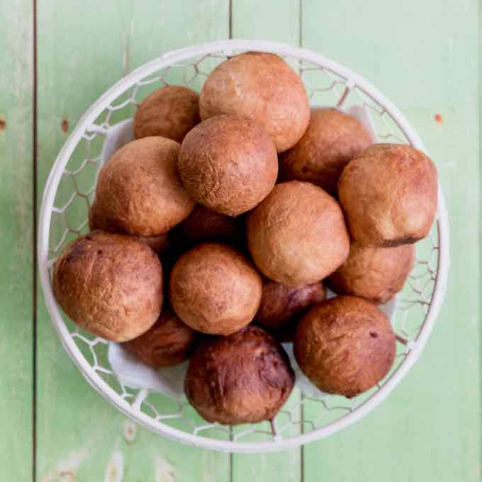
Chebakia
Ingrédients
- 500 g de farine
- 100 g de graines de sésame grillées
- 1 cuillère à soupe de graines de fenouil moulues
- 1 cuillère à soupe de cannelle moulue
- 1 pincée de sel
- 1 œuf
- 1 cuillère à soupe de vinaigre
- 1 cuillère à soupe d'eau de fleur d'oranger
- 100 g de beurre fondu
- 1 cuillère à soupe de levure chimique
- 1 verre d'eau tiède
- Huile pour la friture
- 500 g de miel
- 100 g de graines de sésame pour l'enrobage
Instructions
- Mélangez la farine, les graines de sésame, le fenouil, la cannelle, le sel, l'œuf, le vinaigre, l'eau de fleur d'oranger, le beurre fondu et la levure chimique.
- Ajoutez progressivement l'eau tiède pour former une pâte lisse.
- Laissez reposer la pâte pendant 30 minutes.
- Divisez la pâte en petites boules et étalez-les en rectangles fins.
- Découpez des bandes et formez des motifs en entrelaçant les bandes pour former des fleurs.
- Faites frire les chebakias dans l'huile chaude jusqu'à ce qu'elles soient dorées.
- Faites chauffer le miel et trempez-y les chebakias encore chaudes.
- Saupoudrez de graines de sésame et laissez refroidir avant de servir.
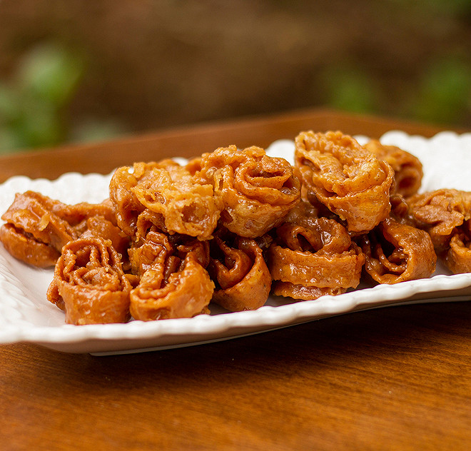
Cocada
Ingrédients
- 500 g de noix de coco râpée
- 250 g de sucre
- 100 ml d'eau
- 1 cuillère à soupe de lait
Instructions
- Dans une casserole, mélanger l'eau, le lait et le sucre.
- Porter à ébullition en remuant constamment.
- Ajouter la noix de coco râpée et cuire à feu doux, en remuant fréquemment, jusqu'à ce que la pâte devienne épaisse.
- Verser la préparation dans un moule et laisser refroidir.
- Découper en carrés une fois bien refroidi. Servir frais.
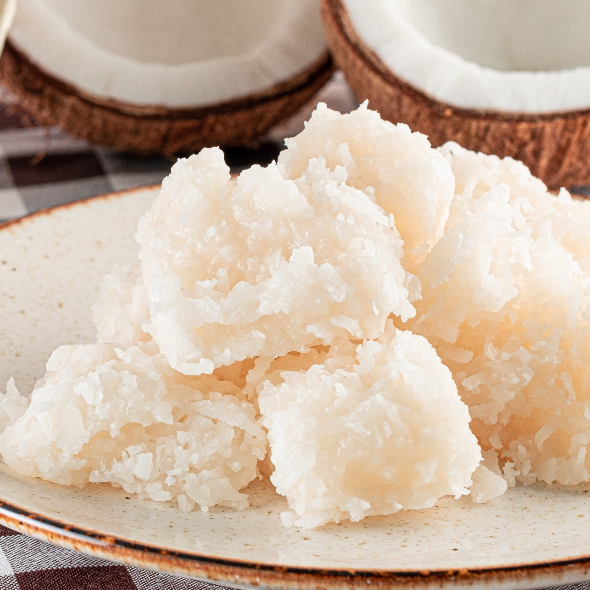
Gateau de Patate Douce
Ingrédients
- 500g de patates douces
- 100g de sucre
- 1 œuf
- 50g de beurre
- 1 cuillère à café de vanille
Instructions
- Faire cuire les patates douces dans de l'eau bouillante jusqu'à ce qu'elles soient tendres.
- Écraser les patates et mélanger avec le sucre, l'œuf, le beurre fondu et la vanille.
- Verser dans un moule et cuire à 180°C pendant 40 minutes.
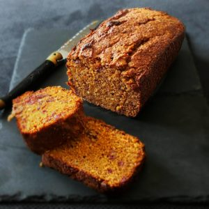
Ghriba
Ingrédients
- 250 g de farine
- 150 g de sucre glace
- 100 g d'amandes en poudre
- 100 g de beurre fondu
- 1 œuf
- 1 cuillère à soupe de levure chimique
- 1 cuillère à soupe d'eau de fleur d'oranger
Instructions
- Préchauffez le four à 180°C et recouvrez une plaque de cuisson de papier sulfurisé.
- Dans un bol, mélangez la farine, le sucre glace, les amandes en poudre et la levure chimique.
- Ajoutez l'œuf, le beurre fondu et l'eau de fleur d'oranger, et mélangez bien jusqu'à obtenir une pâte homogène.
- Façonnez des petites boules de pâte et roulez-les dans le sucre glace.
- Disposez les boules sur la plaque de cuisson et aplatissez légèrement chaque biscuit.
- Enfournez pour 15 à 20 minutes, jusqu'à ce que les biscuits soient légèrement dorés.
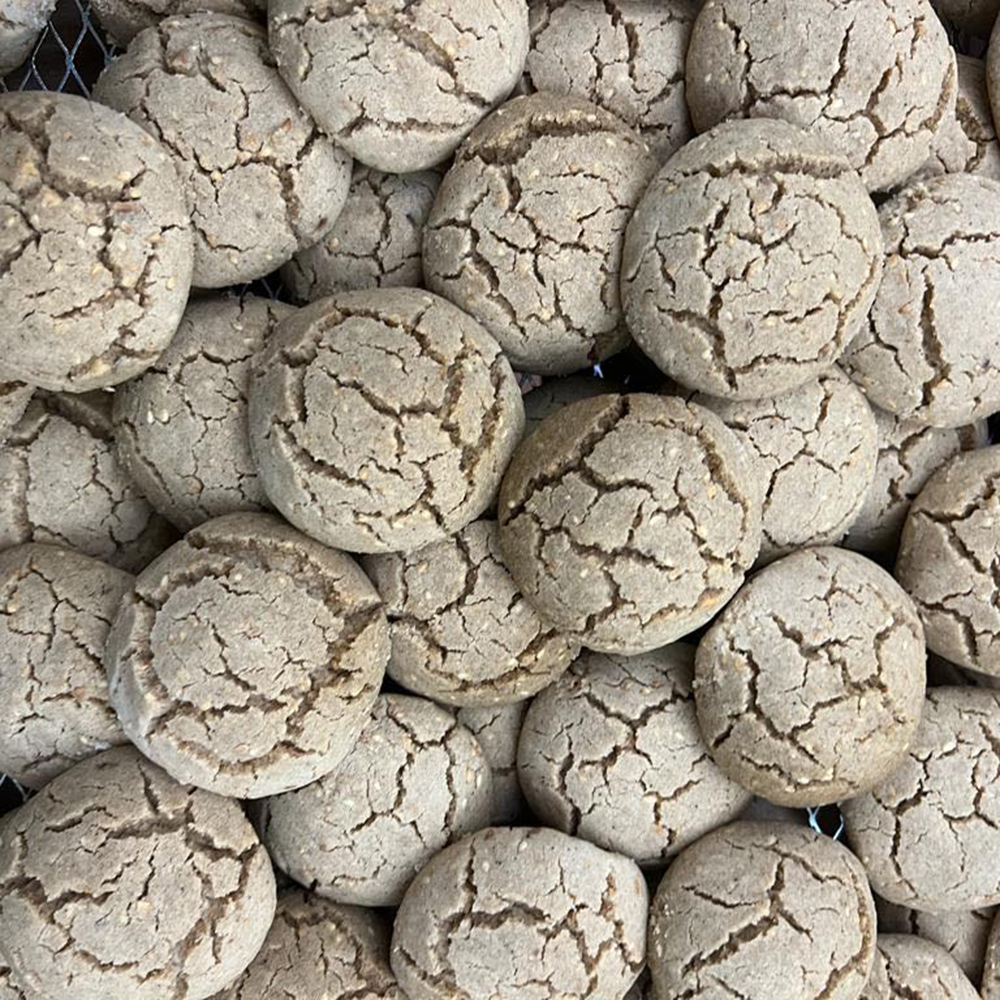
Kaab el Ghazal
Ingrédients
- 250 g de farine
- 100 g de beurre fondu
- 1 cuillère à soupe d'eau de fleur d'oranger
- 1 pincée de sel
- 1 œuf
- 250 g d'amandes en poudre
- 100 g de sucre glace
- 1 cuillère à soupe d'eau de fleur d'oranger
Instructions
- Mélangez la farine, le sel, le beurre fondu, l'œuf et l'eau de fleur d'oranger pour former une pâte lisse.
- Laissez reposer la pâte pendant 30 minutes.
- Mélangez les amandes en poudre, le sucre glace et l'eau de fleur d'oranger pour obtenir une pâte d'amandes.
- Divisez la pâte en petites boules et roulez-les en boudins fins.
- Étalez la pâte de cornes de gazelle en cercles fins, placez un boudin de pâte d'amandes au centre et repliez pour former un croissant.
- Scellez les bords et décorez les extrémités en les repliant légèrement.
- Faites cuire au four préchauffé à 180°C pendant 15 à 20 minutes.
- Laissez refroidir et saupoudrez de sucre glace avant de servir.
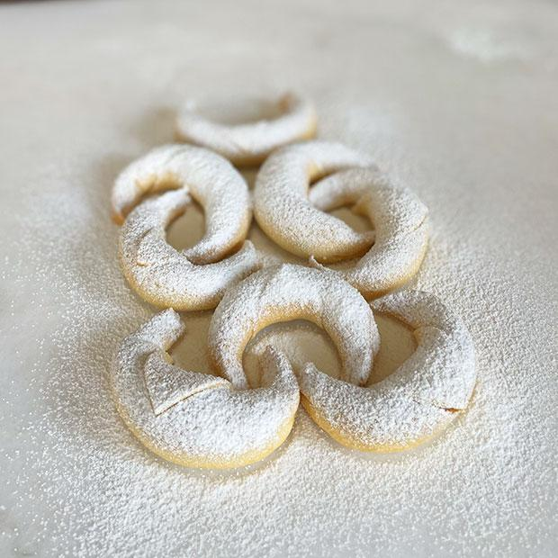
Kashata
Ingrédients
- 200 g de noix de coco râpée
- 200 g de cacahuètes grillées et concassées
- 200 g de sucre
- 1 cuillère à soupe de beurre
- 1 cuillère à soupe d'eau
Instructions
- Dans une casserole, faites fondre le sucre avec l'eau jusqu'à obtention d'un caramel doré.
- Ajoutez le beurre et mélangez bien.
- Incorporez la noix de coco et les cacahuètes, mélangez jusqu'à ce que le tout soit bien enrobé.
- Versez le mélange sur une plaque recouverte de papier sulfurisé et laissez refroidir.
- Une fois refroidi, coupez en barres et dégustez.
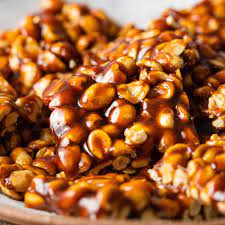
Makroud
Ingrédients
- 500 g de semoule fine
- 100 g de beurre fondu
- 1 cuillère à soupe de sucre
- 1 pincée de sel
- 200 ml d'eau tiède
- 200 g de dattes dénoyautées et hachées
- 100 g de noix ou d'amandes hachées (facultatif)
- Huile pour la friture
- 200 g de miel
Instructions
- Dans un grand bol, mélangez la semoule, le sucre, le sel et le beurre fondu.
- Ajoutez progressivement l'eau tiède et pétrissez jusqu'à obtenir une pâte souple.
- Couvrez la pâte et laissez reposer pendant 15 à 20 minutes.
- Pendant ce temps, préparez la farce en mélangeant les dattes hachées et les noix (si utilisées).
- Divisez la pâte en petites boules et étalez-les en rectangles.
- Placez une petite quantité de farce au centre de chaque rectangle, puis repliez les bords pour former un boudin.
- Coupez les boudins en morceaux de 5 cm et formez des losanges.
- Faites chauffer l'huile dans une friteuse ou une grande poêle, et faites frire les makroud jusqu'à ce qu'ils soient bien dorés.
- Faites chauffer le miel et trempez-y les makroud frits, puis laissez refroidir.
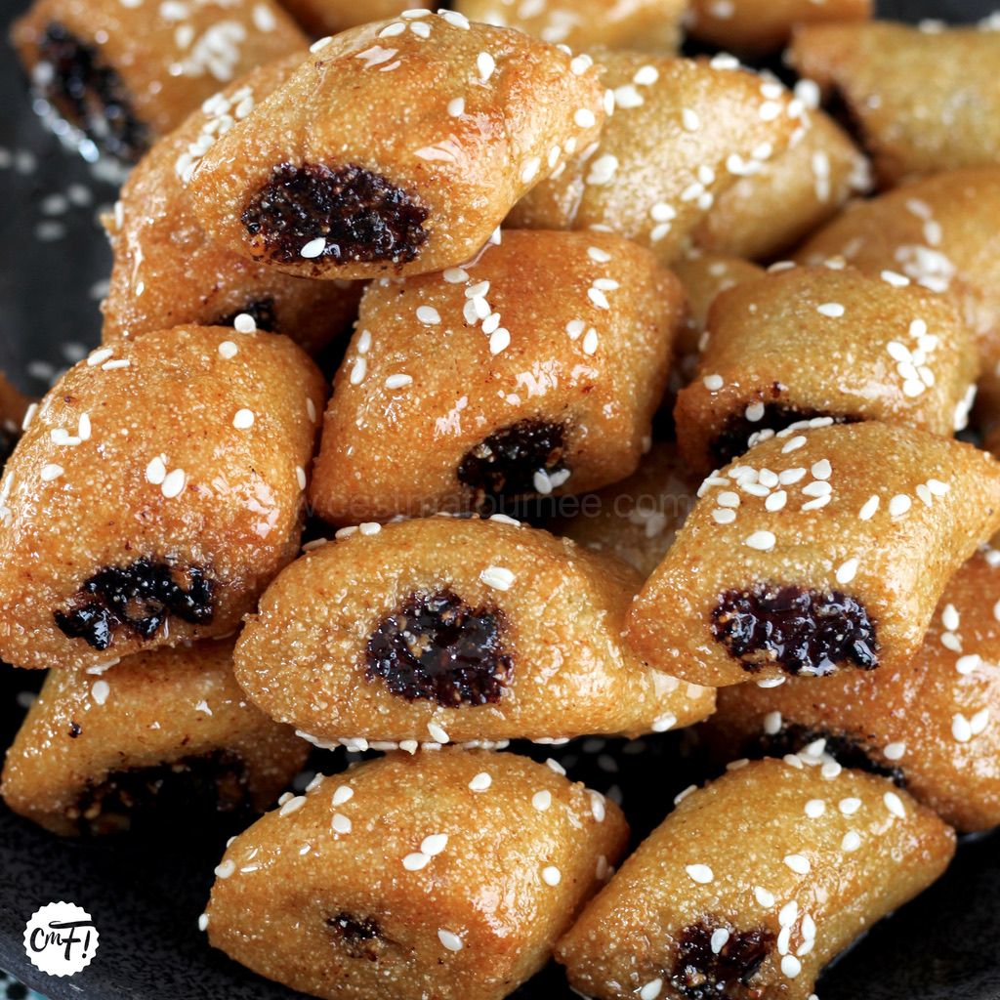
Mandazi
Ingrédients
- 500 g de farine
- 100 g de sucre
- 1 cuillère à soupe de levure chimique
- 1 pincée de sel
- 1 cuillère à soupe de cardamome moulue
- 1 œuf
- 200 ml de lait de coco
- 1 cuillère à soupe de beurre fondu
- Huile pour la friture
Instructions
- Dans un bol, mélangez la farine, le sucre, la levure, le sel et la cardamome.
- Ajoutez l'œuf, le lait de coco et le beurre fondu. Mélangez jusqu'à obtention d'une pâte lisse.
- Couvrez et laissez reposer pendant 1 heure.
- Chauffez l'huile dans une friteuse ou une grande casserole.
- Formez des petites boules de pâte et faites-les frire jusqu'à ce qu'elles soient dorées.
- Égouttez sur du papier absorbant et dégustez tièdes.

Msemen
Ingrédients
- 150 g de farine
- 300g de semoule fine
- 1 cuillère à café de sel
- 225 ml d'eau tiède
- 50 g de beurre fondu
- 50 g d'huile végétale
Instructions
- Dans un saladier, mélanger la farine, la semoule, le sel et le sucre.
- Ajouter petit à petit l'eau tiède tout en pétrissant jusqu'à obtenir une pâte souple.
- Pétrir la pâte pendant environ 10 minutes pour la rendre bien lisse.
- Diviser la pâte en petites boules de la taille d'une noix (environ 10 boules).
- Laisser reposer les boules de pâte pendant 30 minutes à 1 heure, couvertes d'un linge humide.
- Sur une surface huilée, étaler chaque boule de pâte en un cercle très fin à l'aide des doigts ou d'un rouleau.
- Badigeonner chaque cercle de pâte avec du beurre fondu, puis plier les bords pour former un carré ou un rectangle.
- Dans une poêle chaude, cuire chaque msemen sur feu moyen pendant 2 à 3 minutes de chaque côté, jusqu'à ce qu'il soit doré et croustillant.
- Retirer les msemens de la poêle et les poser sur une assiette.
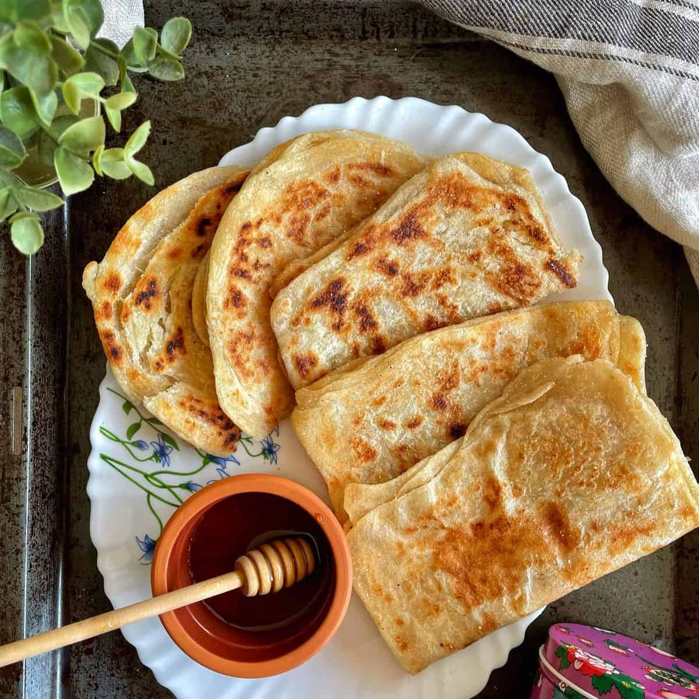
Senj
Ingrédients
- 250 g de farine
- 100 ml d'eau tiède
- 1 cuillère à soupe de levure boulangère
- 1 cuillère à soupe de sucre
- 1 pincée de sel
- Huile pour la friture
Instructions
- Mélangez la farine, la levure, le sucre et le sel dans un bol.
- Ajoutez progressivement l'eau tiède et pétrissez jusqu'à obtenir une pâte souple et élastique.
- Couvrez la pâte et laissez reposer pendant 1 heure, jusqu'à ce qu'elle double de volume.
- Chauffez l'huile dans une grande poêle ou une friteuse.
- Prenez de petites portions de pâte et formez des anneaux avec vos doigts.
- Faites frire les sfenj jusqu'à ce qu'ils soient dorés et croustillants.
- Égouttez sur du papier absorbant et saupoudrez de sucre glace ou de miel avant de servir.
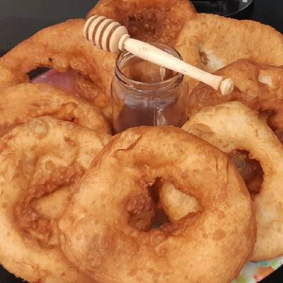
Thiakry
Ingrédients
- 200 g de couscous de mil (ou couscous de blé)
- 1 litre de lait
- 100 g de sucre
- 1 cuillère à soupe de yaourt nature
- 1 cuillère à soupe de lait en poudre
- Fruits secs (raisins secs, dattes, etc.) pour la garniture
Instructions
- Faites cuire le couscous selon les instructions du paquet.
- Dans une casserole, faites chauffer le lait avec le sucre, le yaourt et le lait en poudre.
- Mélangez le couscous cuit avec le mélange de lait sucré.
- Laissez refroidir et réfrigérez pendant au moins 2 heures.
- Servez frais, garni de fruits secs.
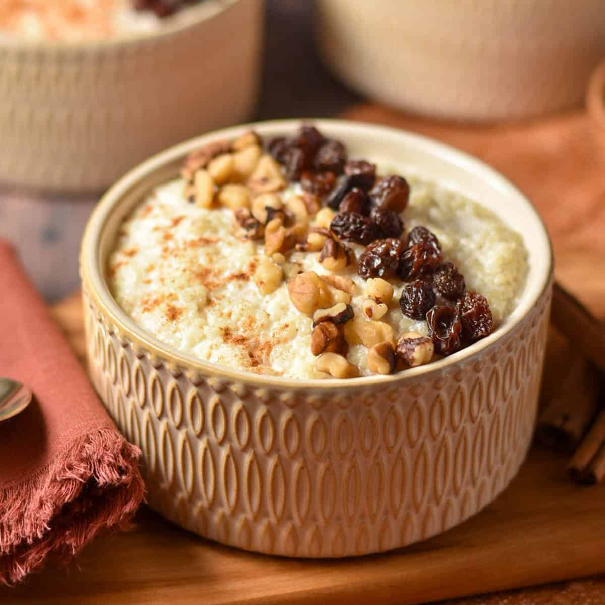
Zlabia
Ingrédients
- 250 g de farine
- 50 g de maïzena
- 1 cuillère à soupe de levure boulangère
- 1 cuillère à soupe de sucre
- 1 pincée de sel
- 250 ml d'eau tiède
- Huile pour la friture
- 250 g de sucre (pour le sirop)
- 100 ml d'eau (pour le sirop)
- 1 cuillère à soupe de jus de citron (pour le sirop)
- 1 cuillère à soupe d'eau de fleur d'oranger (pour le sirop)
Instructions
- Dans un saladier, mélanger la farine, la maïzena, la levure, le sucre et le sel.
- Ajouter l'eau tiède petit à petit et mélanger jusqu'à obtenir une pâte lisse.
- Couvrir la pâte et la laisser reposer pendant 1 heure pour qu’elle lève.
- Dans une petite casserole, préparer le sirop en chauffant le sucre, l'eau et le jus de citron jusqu'à ébullition, puis laisser mijoter pendant 10 minutes.
- Ajouter l'eau de fleur d'oranger dans le sirop et laisser refroidir.
- Chauffer l'huile dans une poêle ou une friteuse.
- Verser la pâte dans une poche à douille ou une bouteille plastique et faire des formes spirales dans l'huile chaude.
- Faire frire jusqu'à ce que les zlabia soient dorées et croustillantes.
- Plonger immédiatement les zlabia dans le sirop refroidi.
- Laisser bien absorber le sirop et servir chaud ou à température ambiante.
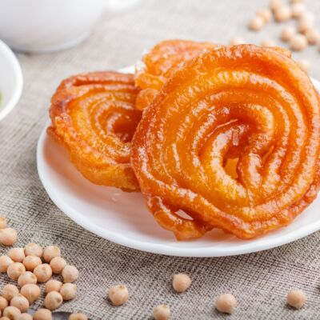
Trouver plus de recette